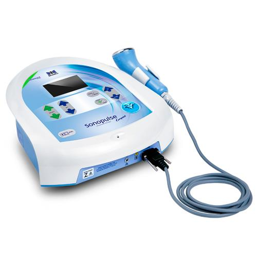

Ultrassom
Definição
{{objeto_ultrassom.definicao}}
Observação
{{objeto_ultrassom.observacao}}
Efeitos Terapêuticos do Ultrassom
-
Reações Químicas:
{{objeto_ultrassom.quimicas}}
-
Respostas Biológicas:
{{objeto_ultrassom.biologicas}}
-
Efeitos Mecânicos:
{{objeto_ultrassom.mecanicos}}
-
Cavitação:
{{objeto_ultrassom.cavitacao}}
-
Efeitos Térmicos:
{{objeto_ultrassom.termicos}}
Indicações
- {{objeto_ultrassom.indicacao1}}
- {{objeto_ultrassom.indicacao2}}
- {{objeto_ultrassom.indicacao3}}
- {{objeto_ultrassom.indicacao4}}
- {{objeto_ultrassom.indicacao5}}
- {{objeto_ultrassom.indicacao6}}
- {{objeto_ultrassom.indicacao7}}
- {{objeto_ultrassom.indicacao8}}
- {{objeto_ultrassom.indicacao9}}
Contraindicações
- {{objeto_ultrassom.contraindicacao1}}
- {{objeto_ultrassom.contraindicacao2}}
- {{objeto_ultrassom.contraindicacao3}}
- {{objeto_ultrassom.contraindicacao4}}
- {{objeto_ultrassom.contraindicacao5}}
- {{objeto_ultrassom.contraindicacao6}}
- {{objeto_ultrassom.contraindicacao7}}
- {{objeto_ultrassom.contraindicacao8}}
- {{objeto_ultrassom.contraindicacao9}}
- {{objeto_ultrassom.contraindicacao10}}
- {{objeto_ultrassom.contraindicacao11}}
- {{objeto_ultrassom.contraindicacao12}}
- {{objeto_ultrassom.contraindicacao13}}
Modo
Pulsado
{{objeto_ultrassom.pulsado}}
Contínuo
{{objeto_ultrassom.continuo}}
Frequência
{{objeto_ultrassom.frequencia}}
Intensidade
{{objeto_ultrassom.intensidade}}
Efeitos terapêuticos térmicos
{{objeto_ultrassom.termico}}
Não térmicos
{{objeto_ultrassom.ntermico}}
Métodos de aplicação
{{objeto_ultrassom.aplicacao}}
OBS:
{{objeto_ultrassom.obs}}
Cuidados Especiais
- {{objeto_ultrassom.cuidados1}}
- {{objeto_ultrassom.cuidados2}}
- {{objeto_ultrassom.cuidados3}}
- {{objeto_ultrassom.cuidados4}}